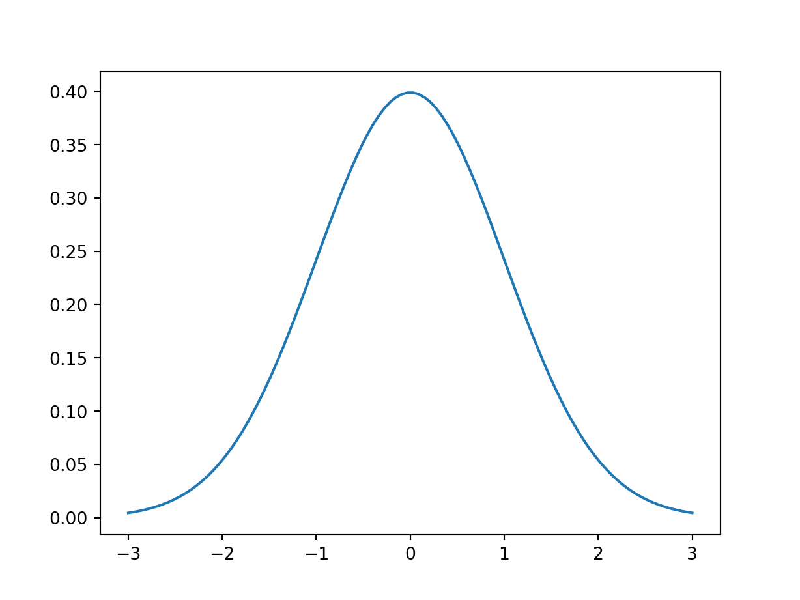

library(reticulate)
use_python("/Users/tb186/anaconda3/bin/python")Minimal Example Python
Minimal Example of using Python with Quarto
Here you add your text as markdown.
Code
You will use the same code block for any language. You just need to change language inside of the brackets {}
import matplotlib.pyplot as plt
import numpy as np
import scipy.stats as stats
import math
mu = 0
variance = 1
sigma = math.sqrt(variance)
x = np.linspace(mu - 3*sigma, mu + 3*sigma, 100)
plt.plot(x, stats.norm.pdf(x, mu, sigma))
plt.show()